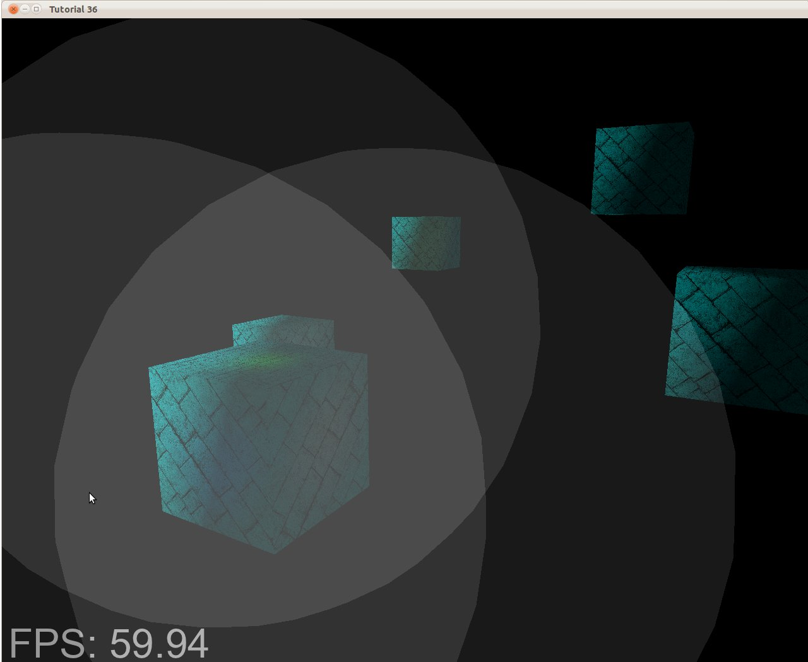
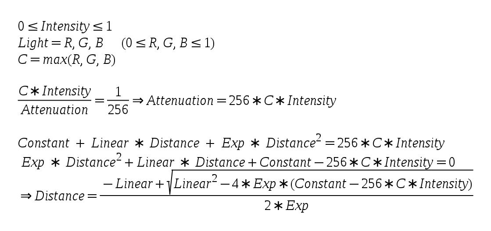

Background
In the previous tutorial we learned the basics of deferred shading and populated the G-Buffer with the combined results of the geometry pass. If you ran the demo you saw how the contents of the G-Buffer look like. Today we will complete the basic implementation of deferred shading and our final scene should look the same (well, about the same...) as if it was created using forward rendering. By the time we finish this tutorial a problem will become evident. This problem will be fixed in the next tutorial.
Now that the G-Buffer is properly populated we want to use it for lighting. The lighting equations themselves haven't changed at all. The concepts of ambient, diffuse and specular lights are still the same and all the relevant data is spread across the textures in the G-Buffer. For every pixel on the screen we just need to sample the data from the different textures and do the same lighting calculations as before. The only question is: how do we know which pixels to process? In forward rendering that was easy. The VS provided the position in clip space, there was an automatic step that translated this into screen space and the rasterizer was incharge of executing the FS for each pixel inside the screen space triangles. We simply calculated lighting on these pixels. But now that the geometry pass has finished we don't want to use the original objects again. That would defeat the whole purpose of deferred shading.
Instead, we look at things from the point of view of the light source. If we have a directional light in our scene then all the screen pixels are affected by it. In that case we can simply draw a full screen quad. The FS will execute for every pixel and we will shade it as usuall. In the case of a point light we can render a crude sphere model with its center at the light source. The size of the sphere will be set according to the strength of the light. Again, the FS will execute for all pixels inside the sphere and we will use it for lighting. This is exactly one of the strengths of deferred shading - reducing the amount of pixels that must be shaded. Instead of calculating the effect of a small light source on all objects in the scene we take it into account only in its local vicinity. We just need to set the sphere to a size which will bound the area where this light has an actual effect.
The demo in this tutorial is very simple, showing only a few boxes and three light sources. It's a bit ironic that the number of vertices in the bounding sphere is larger than the number of vertices in the actual models. However, you need to remember that in a scene in a modern game you have an order of hundreds of thousands of vertices. In this case it is not that big a deal to add a few dozen vertices by rendering a bounding sphere around each light source. In the following picture you can see the light volume of three light sources:
If we execute the FS only on the pixels inside those gray patches it will dramatically reduce the total number of FS invocations. In the case of a complex scene with a large depth complexity the gap becomes even greater. So now the question is: how to set the size of the bounding box?
We want it to be large enough so that the light wouldn't appear to cut off too abruptly but small enough so that distant pixels where the light is too weak to bother won't be shaded. The solution is simple - use our attenuation model to find the optimal size. The attenuation model uses a constant, linear and exponential components as well as the distance from the light source. Since our FS multiplies the color of light by its intensity (which is usually between 0.0 and 1.0) and then divides by the attenuation, we need to find the distance where the attenuation will cause the result of this division to be lower than some threshold. An 8 bit per channel provides 16,777,216 different colors and is considered a standard color scheme. Each channel allows for 256 different values so let's set our threshold at 1/256 (below this is black). Since the maximum channel of color can be less than 256 the attenuation that will cause it to drop below the threshold can also be less than 256. This is how we calculate the distance:
The above is based on the quadratic equation solution.
Source walkthru
(tutorial36.cpp:142)
virtual void RenderSceneCB()
{
CalcFPS();
m_scale += 0.05f;
m_pGameCamera->OnRender();
DSGeometryPass();
BeginLightPasses();
DSPointLightsPass();
DSDirectionalLightPass();
RenderFPS();
glutSwapBuffers();
}
Let's explore the code changes top down. Not much has changed in the main render function from the previous tutorial. We've added a function to set up common stuff for the light pass (BeginLightPasses()) and separated the pass itself into two functions. One to handle point lights and the other directional lights (spot lights are left as an exercise to the reader).
(tutorial36.cpp:164)
void DSGeometryPass()
{
m_DSGeomPassTech.Enable();
m_gbuffer.BindForWriting();
// Only the geometry pass updates the depth buffer
glDepthMask(GL_TRUE);
glClear(GL_COLOR_BUFFER_BIT | GL_DEPTH_BUFFER_BIT);
glEnable(GL_DEPTH_TEST);
glDisable(GL_BLEND);
Pipeline p;
p.SetCamera(m_pGameCamera->GetPos(), m_pGameCamera->GetTarget(), m_pGameCamera->GetUp());
p.SetPerspectiveProj(m_persProjInfo);
p.Rotate(0.0f, m_scale, 0.0f);
for (unsigned int i = 0 ; i < ARRAY_SIZE_IN_ELEMENTS(m_boxPositions) ; i++) {
p.WorldPos(m_boxPositions[i]);
m_DSGeomPassTech.SetWVP(p.GetWVPTrans());
m_DSGeomPassTech.SetWorldMatrix(p.GetWorldTrans());
m_box.Render();
}
// When we get here the depth buffer is already populated and the stencil pass
// depends on it, but it does not write to it.
glDepthMask(GL_FALSE);
glDisable(GL_DEPTH_TEST);
}
There are three main changes in the geometry pass. The first one is that we use the function glDepthMask() to prevent anything but this pass from writing into the depth buffer. The geometry pass needs the depth buffer in order to populate the G-Buffer with the closest pixels. In the light pass we have a single texel per screen pixel so we don't have anything to write into the depth buffer. This brings us to the second change which is to limit the depth test to the geometry pass. No point in doing depth test in the light pass when there is no one to compete against. An important point we must be careful about is to enable writing into the depth buffer before clearing it. glClear() does not touch the depth buffer if the depth mask is set to FALSE. The last change is that we disable blending. We will see later how the light pass uses blending in order to append multiple light sources together. In the geometry pass it is irrelevant.
(tutorial36.cpp:199)
void BeginLightPasses()
{
glEnable(GL_BLEND);
glBlendEquation(GL_FUNC_ADD);
glBlendFunc(GL_ONE, GL_ONE);
m_gbuffer.BindForReading();
glClear(GL_COLOR_BUFFER_BIT);
}
Before we start the actual light passes we have the function above to take care of some common stuff. As mentioned earlier, we need blending for both light types because each light source is handled by its own draw call. In forward rendering we accumulated the results of all light sources in the FS but now each FS invocation only deals with a single light source. We need a way to accumulate the lights together and blending is the answer. Blending is simply a function that takes a source color (output of a FS) and a destination color (from the framebuffer) and performs some calculation on them. Blending is often used in order to create the illusion of transparency because it is capable of taking partial values from the source and destination and blend them together. In our case we set the blend equation to be GL_FUNC_ADD. This means that the GPU will simply add the source and the destination. Since we want true addition we set the blend function to be GL_ONE for the source and destination. The result is: 1 * src + 1 * dst. Oh, and we need to enable blending before we do that...
After we took care of blending we set the G-Buffer for reading and clear the color buffer. We are now ready for the light passes.
(tutorial36.cpp:210)
void DSPointLightsPass()
{
m_DSPointLightPassTech.Enable();
m_DSPointLightPassTech.SetEyeWorldPos(m_pGameCamera->GetPos());
Pipeline p;
p.SetCamera(m_pGameCamera->GetPos(), m_pGameCamera->GetTarget(), m_pGameCamera->GetUp());
p.SetPerspectiveProj(m_persProjInfo);
for (unsigned int i = 0 ; i < ARRAY_SIZE_IN_ELEMENTS(m_pointLight); i++) {
m_DSPointLightPassTech.SetPointLight(m_pointLight[i]);
p.WorldPos(m_pointLight[i].Position);
float BSphereScale = CalcPointLightBSphere(m_pointLight[i]);
p.Scale(BSphereScale, BSphereScale, BSphereScale);
m_DSPointLightPassTech.SetWVP(p.GetWVPTrans());
m_bsphere.Render();
}
}
In the point light pass we simply render a bounding sphere for each point light. The bounding sphere center is set at the location of the light source and the function CalcPointLightBSphere() calculates the size of the sphere according to the parameters of the light.
(tutorial36.cpp:275)
float CalcPointLightBSphere(const PointLight& Light)
{
float MaxChannel = fmax(fmax(Light.Color.x, Light.Color.y), Light.Color.z);
float ret = (-Light.Attenuation.Linear + sqrtf(Light.Attenuation.Linear * Light.Attenuation.Linear -
4 * Light.Attenuation.Exp * (Light.Attenuation.Exp - 256 * MaxChannel * Light.DiffuseIntensity)))
/
(2 * Light.Attenuation.Exp);
return ret;
}
This function calculates the size of the bounding box for the specified light source. This is a direct implementation of the formula given in the background section.
(tutorial36.cpp:230)
void DSDirectionalLightPass()
{
m_DSDirLightPassTech.Enable();
m_DSDirLightPassTech.SetEyeWorldPos(m_pGameCamera->GetPos());
Matrix4f WVP;
WVP.InitIdentity();
m_DSDirLightPassTech.SetWVP(WVP);
m_quad.Render();
}
Handling directional light (we support only one such light source) is even simpler. We just need a full screen quad to reach all the pixels. The quad model that we use go from (-1,-1) to (1,1) so we want our WVP matrix to be the identity matrix. This will leave the vertices as-is and after perspective divide and screen space transform we will get a quad that goes from (0,0) to (SCREEN_WIDTH,SCREEN_HEIGHT).
(light_pass.vs)
#version 330
layout (location = 0) in vec3 Position;
uniform mat4 gWVP;
void main()
{
gl_Position = gWVP * vec4(Position, 1.0);
}
The VS of the light passes is as simple as it gets. In the case of directional light the WVP matrix is the identity matrix so the position is simply passed through. In the case of a point light we get the projection of the bounding sphere on the screen. These are the pixels that we want to shade.
(dir_light_pass.fs:108)
void main()
{
vec2 TexCoord = CalcTexCoord();
vec3 WorldPos = texture(gPositionMap, TexCoord).xyz;
vec3 Color = texture(gColorMap, TexCoord).xyz;
vec3 Normal = texture(gNormalMap, TexCoord).xyz;
Normal = normalize(Normal);
FragColor = vec4(Color, 1.0) * CalcDirectionalLight(WorldPos, Normal);
}
(point_light_pass.fs:109)
void main()
{
vec2 TexCoord = CalcTexCoord();
vec3 WorldPos = texture(gPositionMap, TexCoord).xyz;
vec3 Color = texture(gColorMap, TexCoord).xyz;
vec3 Normal = texture(gNormalMap, TexCoord).xyz;
Normal = normalize(Normal);
FragColor = vec4(Color, 1.0) * CalcPointLight(WorldPos, Normal);
}
These are the fragment shaders for the directional and point lights. We have separate functions for them because internally they use different logic. In cases like that it is better from a performance point of view to use separate shaders than adding a branch inside the shader. The internal functions for light calculation are practically the same as the ones we've been using for quite some time now. We sample the G Buffer in order to get the world position, color and normal. In the previous tutorial we also had a place in the G Buffer for the texture coordinates but it is better to save that space and calculate it on the fly. This is very easy and is done in the function below.
(dir_light_pass.fs:101, point_light_pass.fs:101)
vec2 CalcTexCoord()
{
return gl_FragCoord.xy / gScreenSize;
}
We need to sample from the G Buffer according to the location of the pixel on the screen. GLSL provides a handy built-in variable called gl_FragCoord which is exactly what we need. It is a 4D vector which contains the screen space coordinates of the current pixel in its XY components, the depth of the pixels in its Z component and 1/W in its W component. We need to supply the screen width and height to the FS and by dividing the screen space position by the dimensions of the screen we get a value between 0 and 1 that can serve as a texture coordinate for accessing the entire range of the G Buffer.
(gbuffer.cpp:49)
bool GBuffer::Init(unsigned int WindowWidth, unsigned int WindowHeight)
{
...
for (unsigned int i = 0 ; i < ARRAY_SIZE_IN_ELEMENTS(m_textures) ; i++) {
...
glTexParameterf(GL_TEXTURE_2D, GL_TEXTURE_MIN_FILTER, GL_NEAREST);
glTexParameterf(GL_TEXTURE_2D, GL_TEXTURE_MAG_FILTER, GL_NEAREST);
...
}
...
}
We need to do a minor addition to the initialization of the G Buffer. In the previous tutorial we rendered into it and then used a blit operation to copy it to the default framebuffer. Since we are going to use it for actual sampling and there is a 1 to 1 mapping between a screen pixel and G Buffer texel we set the filtering type to GL_NEAREST. This prevents unnecessary interpolation between the texels that might create some fine distortions.
(gbuffer.cpp:98)
void GBuffer::BindForReading()
{
glBindFramebuffer(GL_DRAW_FRAMEBUFFER, 0);
for (unsigned int i = 0 ; i < ARRAY_SIZE_IN_ELEMENTS(m_textures); i++) {
glActiveTexture(GL_TEXTURE0 + i);
glBindTexture(GL_TEXTURE_2D, m_textures[GBUFFER_TEXTURE_TYPE_POSITION + i]);
}
}
On the same note, we need to do some modifications to the way we bind the G Buffer for reading before starting the light pass. Instead of binding it to the GL_READ_FRAMEBUFFER target we disconnect it from the GL_DRAW_FRAMEBUFFER target by binding the default FB instead. Finally, we bind the three textures to the appropriate texture units so we can sample from them in the FS.
Problems, problems, ...
There are a couple of problems with our current implementation of deferred shading. The first one
you will probably notice is that when the camera enters the light volume the light disappears.
The reason is that we only render the front face of the bounding sphere so once inside it is culled
away. If we disable back face culling then due to blending we will get an increased light when outside
the sphere (because we will render both faces) and only half of it when inside (when only the back face
is rendered).
The second problem is that the bounding sphere doesn't really bound the light and sometimes objects that are outside of it are also lit because the sphere covers them in screen space so we calculate lighting on them.
We will deal with these problems in the next tutorial.